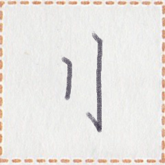
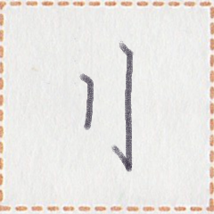
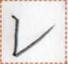
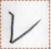

← Previous
Index
Next →
English: "You are so great!" Leshēl answered.
Chinese: “你太好了。”雪季回答道。
Chinese (pinyin): Nǐ tài hǎo le. Xuějì huídá dào.
Pekzep (latin transcription): mua2 kit kait! let1 xot1 i2 zep1.
Pekzep (hanzi transcription): 汝極善！雪季反言。
Pekzep (linzklā): 

 

 


Sound:
Analysis: